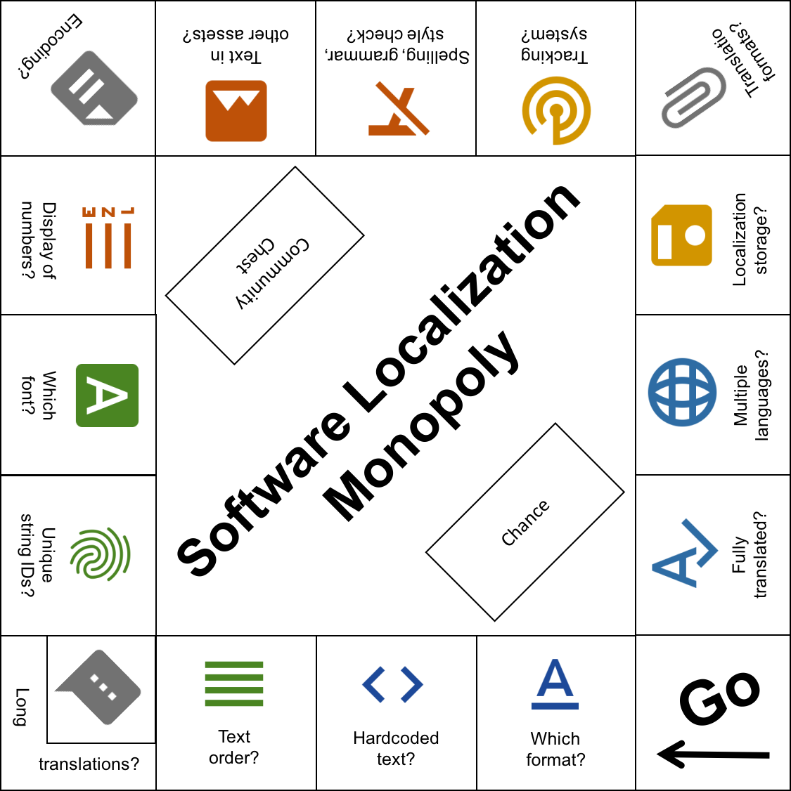
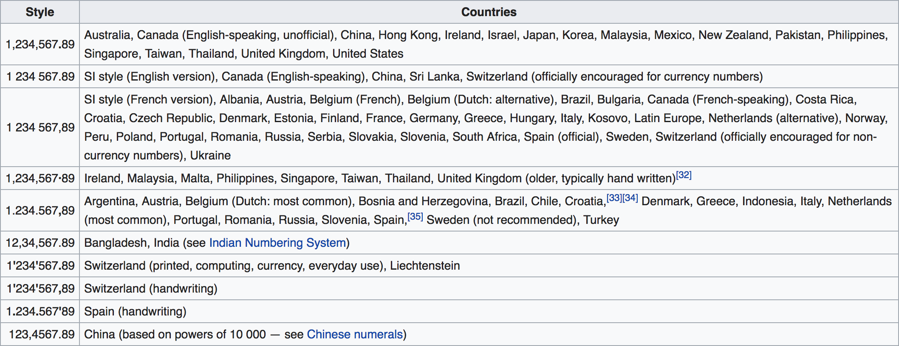

So you want people from all around the world to use and understand your software...
...but how to achieve that?
Which format should I use?
Think about the workflow of exporting strings of the software, having them translated and then importing them back into your software. This will give you many ideas on how to structure your strings.
Sometimes the used library already pretends a format.
For web projects for example this can be:
For mobile projects for example this can be:
- Localizable.strings (i.e. used by iOS)
- XML String Resource (i.e. used by Android)
- ...
For system apps for example this can be:
- Java properties files (i.e. used by Java)
- ResX files (i.e. used by .Net)
- ...
Do you hardcode text strings in the source code?
Resource files should store all text used in the software; do not leave text strings hardcoded!
Just don't!
Can the order of variables in localized strings be changed?
Implement a token system to ensure nouns, verbs, etc. can be placed in unique order by language. Different languages needs to know more information about the context. For example for pluralization or gender. The Italian language for example relies on gender. The words in the sentence change depending on whether you're talking about a man or a woman. Polish suppose you have a singular and then you have a different plural depending on whether the number of things ends with 2, 3 and 4 or some other digit. And Romanian need a different plural for any group of objects greater than 20.
Does the interface allow for long translations?
What about long translations in areas with single line text? Are there areas with multi-line text in your software? Sentences that take five syllables in English actually take a whole two paragraph description in some other language.
Do you use unique string IDs?
Unique string IDs help keep development, translation and QA teams on the same page. Another reason for this is: if you have for example a text in English that is visible in 2 different places on your UI, but is potentially translated differently in other languages (because it fits better).
What about fonts? Who selects their types and sizes in the software?
Both localization and development teams should select fonts as a cooperative effort. And how do you decide on the proportion of fonts? While fonts for North American and European languages should be "Proportional", "Monospace" is the right type for Asian languages. Are the fonts compatible with special characters for all languages? Different languages, different needs: for special characters, word order, even numbers.
How are date, time, currency, and numbers displayed?
Allow date, time, currency, and numbers to be displayed with differing figures and number separators by language or even region.
Make sure the date format is right because Americans do month/day/year Brit day/month/year and by the way in America the week starts on a Sunday and in Britain the week starts on Monday. Europe wants 24 hour clocks and America wants 12 hour clocks.
Regarding numbers, here a little list:

source
What encoding do you use for your text assets?
Choose an encoding that supports all target languages. If you don't know, just choose UTF-8. If you want to know Why UTF-8 is the best encoding? read this article. By the way, to tell apart assets intended for a particular locale use ISO 693-1 & 3166-1 language and country codes to mark assets by locale.
Do the art assets of your software UI have text?
Be ready to swap art assets if they contain legible text. Sometimes even if there is no legible text you may want to adapt the art asset (i.e. an image) because of cultural reasons. There are some libraries that can help with this issue i.e. Fragment replacement for links and images
Did you put the original text through a spelling, grammar, and style check?
Prevent back-and-forth rechecking that may stall the whole process. As an alternative you should be thinking of making some sort of Continuous Localization. With Continuous Localization you can take care of the translations from the first day and keep up with changes with ease. The process of translation and development are separated.
Do you use a tracking system?
Tracking every change on localizable content can be important to ensure that no content will be left behind when distributing your software. For certain projects or industries it's important to know which translator has done what change for auditing reasons. Some translation management systems offer a dedicated history feature. This empowers you to prove anytime when a content fragment was changed.
What file formats are you sending for translation work?
JSON, XML (or a derivative format i.e. XLIFF) is preferred over plain text or Excel files. Even better are localization management systems that offers a completely integrated approach.
Where are the localization assets?
Store localization assets in an easy to access location, for swift access, import and export. With a proper Continuous Localization solution translations can be updated without the need to release an update of your app. For example: translations deployed to a CDN and consumed from your application.
Do you intend to have the texts translated into more than one language?
Process resource files into separate language ones so all translators can work in parallel. A good localization management solution can really help here. All team members can collaboratively work in parallel. In this way, you can get to your objective in a faster way.
How do you track which language is fully translated?
To say it in one sentence: "Start thinking about the localization process early!" The biggest mistake one can do is looking on localization as it’s only based on instrumenting your code and extract texts into resource files so you can translate them later.
You should keep full overview about what is translated and what not — even more if you order translations from the translation providers you also should keep track of your open orders.
What do you say now? Are you ready to "play" software localization monopoly?
Don't worry, locize can help!
Watch the demo video to learn more:
locize removes the pain in the translation process. No more delays in shipping your software because of missing translations. Translators can keep up with changes from day one. The continuous localization process keeps up with your demanding business.